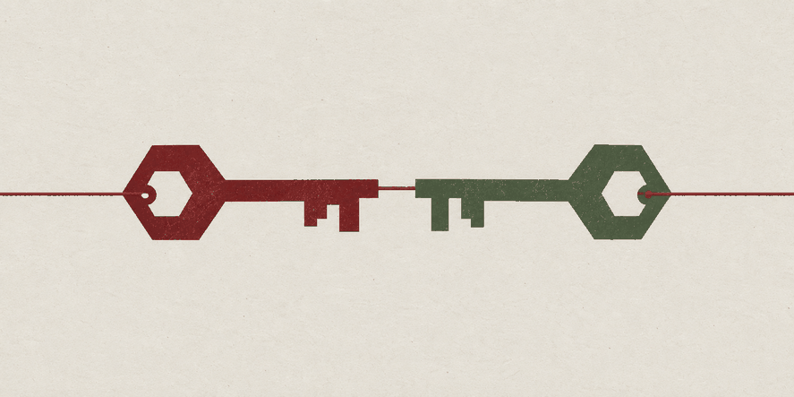
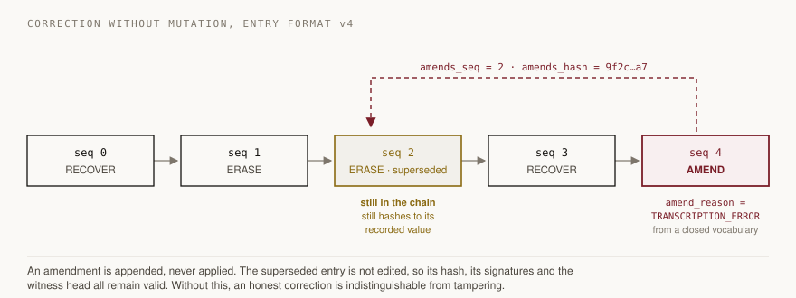
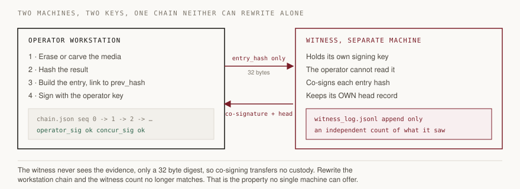

Unbroken chain of custody for digital forensics.
Secure data erasure and file recovery, where every operation is written into one append-only ledger signed by two independent parties.

Every figure is produced by running the code in this repository. Commands to reproduce each one are in the README.
An amendment is appended, never applied. The superseded entry stays in the chain, unedited, still hashing to its recorded value.

The witness never sees the evidence, only a 32 byte digest, so co-signing transfers no custody.

The chain does not prevent omission. It proves nothing was altered after being written. It cannot prove nothing was withheld. That is integrity, not completeness.
OpenTimestamps is not legally recognised in Indian courts. It is a cryptographic guarantee of a class courts increasingly accept, and that is the whole claim.
The custody tier reached is
WITNESS_COSIGNED, never FULL_CUSTODY. The tool
refuses to print the higher label. The full list of limits is in the
README.